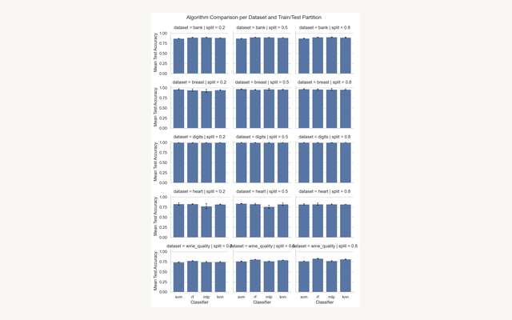

A controlled, 180-run comparison of four classifier families across five UCI datasets, built to replicate the empirical methodology of Caruana & Niculescu-Mizil (2006) rather than just report one model's accuracy.
"Which classifier should I use?" usually gets answered with a default or a rule of thumb, not evidence. Caruana & Niculescu-Mizil's 2006 study showed no single classifier dominates across tasks, that performance is a function of the dataset, not just the model. The goal here was to build a small, controlled version of that study myself, rather than take its conclusions on faith: pick a handful of classifier families, hold everything else fixed, and see whether the same patterns show up.
Four classifier families spanning distinct modeling assumptions: an RBF-kernel SVM (kernel methods), Random Forest (ensemble trees), an MLP (neural network), and KNN (instance-based). Each ran against five UCI datasets chosen for range, not convenience, Bank Marketing, Breast Cancer, Digits, Heart Disease, and Wine Quality, spanning 303 to ~45,000 raw samples and socioeconomic, medical, handwriting, and chemistry domains.
Every dataset went through the same ColumnTransformer: numeric features
median-imputed and standardized, categorical features mode-imputed and one-hot encoded.
Each classifier was tuned via stratified 5-fold GridSearchCV over its own
hyperparameter grid, then evaluated at three train/test splits (20/80, 50/50, 80/20)
across three random-seed trials, 5 × 4 × 3 × 3 = 180 independent experiments in total.
Preprocessing lives inside an sklearn Pipeline that gets passed
directly into GridSearchCV, not applied once up front, so imputation
statistics, scaling parameters, and one-hot categories are fit using only each fold's
training portion. Get this wrong and cross-validation quietly overstates every model's
real-world accuracy. Every trial also fixes random_state across the split,
the CV folds, and the stochastic models (RF, MLP), so comparisons across three seeds
are attributable to genuine variance, not just different draws lining up by luck.
Random Forest came out most consistently strong, especially on Wine Quality and Heart Disease, the two noisiest, weakest-signal datasets in the set. SVM won cleanly on Breast Cancer and Digits, where the classes separate well and a kernel boundary pays off. MLP was the most data-hungry: it trailed at the 20% training split and closed most of that gap by 80%. KNN held up fine on the cleaner datasets but degraded on Wine Quality and Heart, consistent with instance-based methods struggling as noise and dimensionality rise. Digits and Breast Cancer sit near ceiling accuracy for every model; Heart Disease and Wine Quality stay the hard cases throughout, exactly the kind of dataset-dependence Caruana & Niculescu-Mizil reported.
Reproduced directly from the aggregated results CSV — the same file every figure in the report is generated from, not a hand-picked run.

A single accuracy number from a single model tells you almost nothing about whether it generalizes; it takes a baseline, a second model, and a controlled sweep across conditions before a result means anything. That's the same discipline behind the baseline comparisons on the Marketplace Pricing and NBA projects, just applied here at the level of picking a model family in the first place, before ever getting to feature engineering.